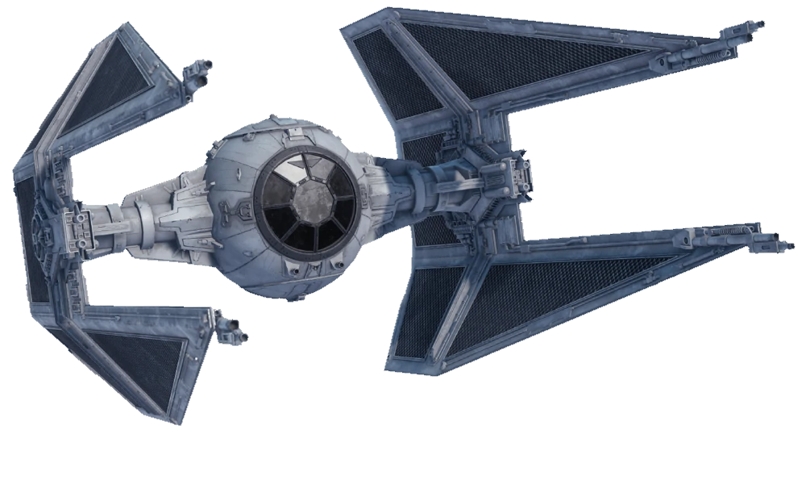

|
 TIE elfogóvadász78 000
|
TIE elfogóvadász történeteA TIE/IN elfogóvadász, más néven TIE elfogóvadász vagy TIE/in a Galaktikus Birodalom által használt TIE vadászgépek egyik típusa volt, leginkább az endori csata során. Az elfogógépet négy nyíl alakú, lézerágyúkkal ellátott panelről lehetett felismerni. A TIE elfogóvadászt a Sienar Fleet Systems hozta létre, miután rájöttek, hogy a TIE Advanced x1 túl drága lenne a tömeggyártáshoz, és a Birodalom közvetlen válasza volt a Lázadó Szövetség gyorsabb csillaghajóinak bevezetésére A hidegháború idejére az Első Rend a TIE/ba Baron Space Superiority elfogóvadász használta, a TIE elfogóvadász saját változatát. Kylo Ren legfőbb vezető uralkodása alatt a First Order a TIE/wi elfogóvadászt és a TIE/wi módosított elfogóvadász is bevetette. Felszerelése
|